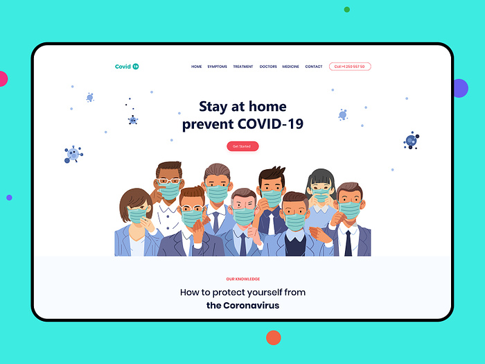

The spread of the lated coronavirus disease, COVID-19, is impacting us all. Our healthand safety, productivity, and everyday routines have been disrupted. Now is the time to share accurate, helpful information with our family, friends, coworkers, and peers to help stop the spread of this disease.
Coronavirus disease (COVID-19) is an infectious disease caused by the SARS-CoV-2 virus.
COVID-19 is still circulating within the community. It is still possible to catch and spread COVID-19, even if you are fully vaccinated. Following this guidance will help you to understand situations where there is a greater risk of catching or spreading COVID-19 and the steps that you can take to stay safe and protect others. By making safer choices and following public health advice, you can help lower the spread of COVID-19 in the community.
As we learn to live alongside COVID-19, there are actions we can all take to help reduce the risk of catching and passing it on to others. These actions will also help to reduce the spread of other respiratory infections, such as influenza (flu), which can spread easily and may cause serious illness in some people. Respiratory infections can spread easily between people. It is important to be aware of symptoms so you can take action to reduce the risk of spreading your infection to other people. The risk of catching or passing on COVID-19 or other respiratory infection is greatest when someone who is infected is physically close to, or sharing an enclosed and/ or poorly ventilated space with other people. When someone with a respiratory infection breathes, speaks, coughs or sneezes, they release tiny particles (droplets and aerosols) containing the virus. The particles can come into contact with the eyes, nose or mouth or can be breathed in by another person. The particles can also land on surfaces and be passed from person to person by touch. The risk of catching or passing on respiratory infection is higher in crowded and enclosed spaces, where there are more people who might be infectious and limited fresh air.
Once someone realizes they have the Coronavirus, then there is the stress of what to do next. Information all over says to simply stay home but there is a lot more to it than that. Much like the details for avoiding the virus, quick and concise details on what to do once you have it is also needed. We’re so overwhelmed with all this information that it can be difficult to understand what you should actually do. Most people’s instincts are going to be to head to the hospital but before they do your information can help guide them much faster and easier.
All information on the COVID-19 outbreak 